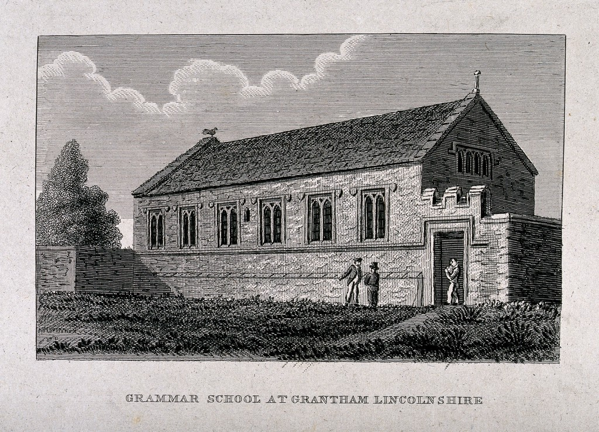
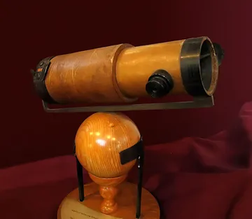
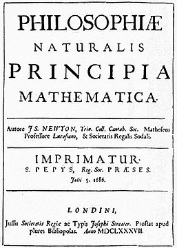
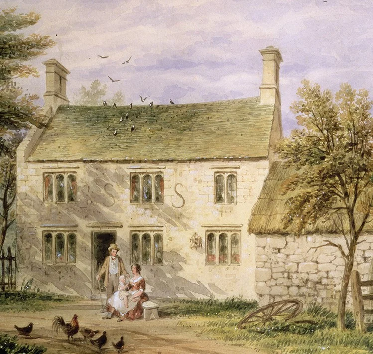
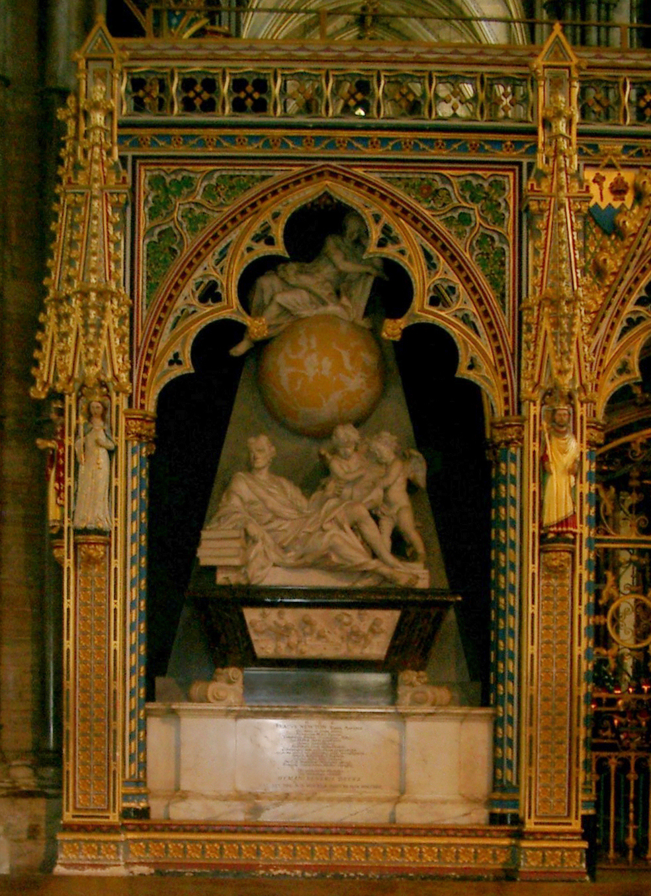
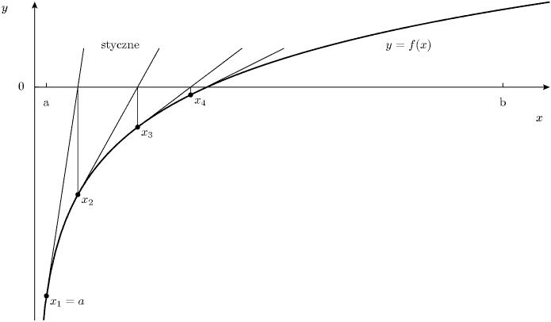
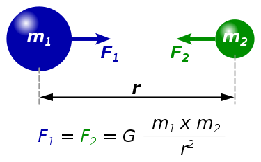
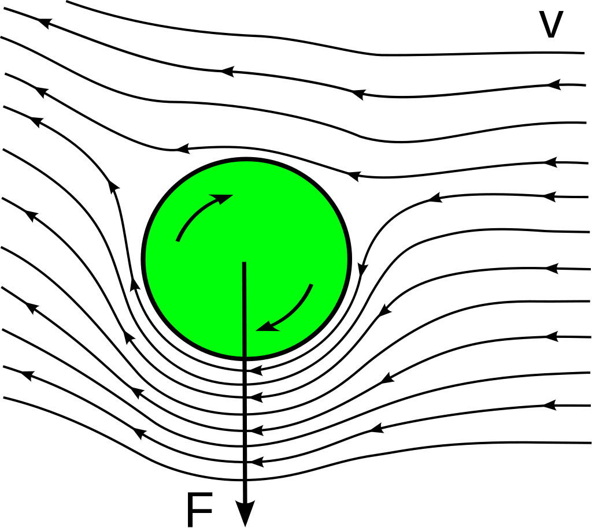

Isaac Newton (ur. 25 grudnia 1642 r., zm. 20 marca 1727 r.) był to angielski uczony, jeden z najwybitniejszych naukowców wszech czasów, zajmujący się wieloma dziedzinami: fizyką, astronomią, matematyką, filozofią, alchemią oraz historią. Przede wszystkim jednak zasłynął z odkryć w dziedzinie fizyki, które stały się niezbędne w dalszych badaniach.
Newton urodził się wspomnianej przeze mnie dacie w hrabstwie Lincolnshire. Swoją edukację rozpoczął w pobliskiej szkole wiejskiej, ale szybko został przeniesiony do Grantham Grammar School, gdzie został prymusem i ożenił się z córką aptekarza, u którego mieszkał, jednak z uwagi na podjęcie studiów i osłabienie romansu poślubiła ona kogoś innego i już później nigdy się nie ożenił.

Grantham Grammar School
W 1661 rozpoczął on naukę w Trinity College w Cambridge, mimo że nauczanie tam było oparte na dziełach Arystotelesa to on postanowił uczyć się z bardziej współczesnych źródeł. Niedługo później opisał twierdzenie o dwumianie i pracował nad rachunkiem różniczkowym i całkowitym, uzyskał wówczas stopień naukowy. Wkrótce według legendy uświadomił sobie według legendy siedząc pod jabłonią, że siła spadającego na jego głowę jabłka związana jest z grawitacją.
W 1667 roku powrócił on do Trinity College'u, który był zamknięty z powodu zarazy i wkrótce opublikował dwie publikacje dotyczące jego odkryć. Dalej rozwijał on teorię rachunku różniczkowego i całkowitego niezależnie od Leibniza i mimo, że Newton opracował swoją metodę przed nim to w anglojęzycznym świecie przyjęto notację Leibniza i nazwę "metoda różniczkowa", przez co Newton pod koniec życia oskarżał go o plagiat. 29 października 1669 roku został profesorem matematyki na uniwersytecie.
Od 1670 do 1672 roku wykładał optykę. Wówczas zauważając pewną wadę refraktorów (teleskopów soczewkowych) zaprojektował własne zwane jako teleskopy Newtona (teleskopy zwierciedlane). Wkrótce Royal Society poprosiło o jego demonstrację, taki poziom spowodował, że wydał on dzieło pt. "Opticks". Jednak z powodu krytyki z strony Roberta Hooke'a wycofał się z debaty. Docelowo Newton twierdził, że światło pochodzi z cząstek, a późniejsi fizycy byli bardziej przychylni do falowej natury światła, jednak uważa się, że jego teoria była bliższa dualistycznej.

Teleskop zwierciadłowy Newtona
W tamtych czasach nie było rozgraniczenia między nauką, a alchemią, wówczas głosił pokrewieństwo między telepatią, leczeniem ran za pomocą broni obłożonych proszkami i przyciąganiem magnetycznym i grawitacją.
Wkrótce w 1679 roku powrócił do pracy nad grawitacją, a konkretnie nad jej związkiem z orbitowaniem planet. Z kolei w 1687 r. opublikował bardzo ważne dzieło, pt. "Matematyczne zasady filozofii naturalnej", gdzie opisał trzy uniwersalne zasady dynamiki, które utrzymały się aż do czasów Einsteina.

Matematyczne zasady filozofii naturalnej
Co ciekawe w ostatnich 30 latach życia sporo czasu spędził nad badaniem Pisma Świętego, szczególnie proroctwami tam zawartymi, bardzo możliwe że zainspirowały go do tego poglądy Henry'ego More'a. W 1690 roku napisał do niego rękopis traktujący o zniekształceniach w Nowym Testamencie, mając nadzieje, że pomoże mu opublikować go we Francji. More chciał opublikować je anonimowo, natomiast Newton błagał, by tego nie zrobił, bo uważał że byłoby to zbyt ryzykowne. Pod koniec życia napisał "Poprawioną chronologię starożytnych królestw" oraz "Uwagi dotyczące proroctw Daniela i Apokalipsy św. Jana", które zostały opublikowane po jego śmierci i zawarł w nich wyliczenia dat, postrzeganych przez niego za najważniejsze i przekonanie o zbliżającym się końcu świata.
Wkrótce, gdy podjęto decyzje o odnowieniu monety w Londynie, Newton się tam w 1696 roku przeniósł, aby objąć posadę Nadzorcy Mennicy Królewskiej, bardzo przykładał się do owej pracy, a po śmierci Lucasa - komendanta Tower of London został w 1700 roku Kuratorem Mennicy Królewskiej i zajmował się tym do śmierci.

Mennica Królewska, w której Newton został Kuratorem
Niedługo później zrezygnował z nauczania w Cambridge i opublikował anonimowo prawo termodynamiki. Został również zamiast tego prezesem Royal Society i członkiem Francuskiej Akademii Nauk. W 1705 roku otrzymał tytuł szlachecki z rąk królowej Anny i tytułowano go jako "sir Isaac". Zmarł w Londynie, a pochowano go w Opactwie Westminsterskim.

Grób Isaaca Newtona w Westminster
Osiągnięcia naukowe Newtona
Jak wspomniałem głównie Newton zajmował się fizyką, natomiast jeśli chodzi o osiągnięcia w dziedzinie matematyki niezależnie od Leibniza był twórcą rachunku różniczkowego i całkowitego. Podał szereg dwumianowy i przy wykorzystaniu obu tych rzeczy odkrył rekordowo wówczas szybki sposób obliczania π.
Utworzył metodę Newtona służącą do znajdowania przybliżonych rozwiązań równań liczbowych. Rozwiązał też problem brachistochrony i w ramach geometrii analitycznej i algebry opisał krzywe płaskie trzeciego stopnia i algorytm schodkowania układów równań liniowych.

Cztery pierwsze kroki zastosowania iteracyjnej metody Newtona
W fizyce natomiast był autorem wielu bardzo ważnych praw i zasad, do najważniejszych należały: trzy zasady dynamiki, zasady zachowania pędu oraz moment pędu, efekt Magnusa, prawo powszechnego ciążenia (zarówno dla Ziemi jak i innych ciał niebieskich), teorii falowej, gdzie spekulował, że cząstkom światła towarzyszą fale wpływające na ich ruch, emisyjnej teorii światła, w ramach której przykładowo jako jeden z pierwszych bronił odkrycia Rømera, że prędkość światła jest ograniczona. Dowiódł również, że Ziemia jest elipsoidą spłaszczoną na biegunach oraz w ramach rozszerzenia prawa Keplera, że orbity mogą nie być eliptyczne, ale również hiperboliczne i paraboliczne. Na jego cześć jednostkę siły w układzie SI nazwano niutonem (N), mechanika klasyczna bywa nazywana mechaniką Newtona, a płyny ze względu na właściwości mechaniczne dzielimy na newtonowskie i nienewtonowskie.

Prawo powszechnego ciążenia Newtona

Efekt Magnusa opisuje powstawanie siły prostopadłej do kierunku ruchu działającej na obracającą się lub poruszającą się względem cieczy bryłę obrotową